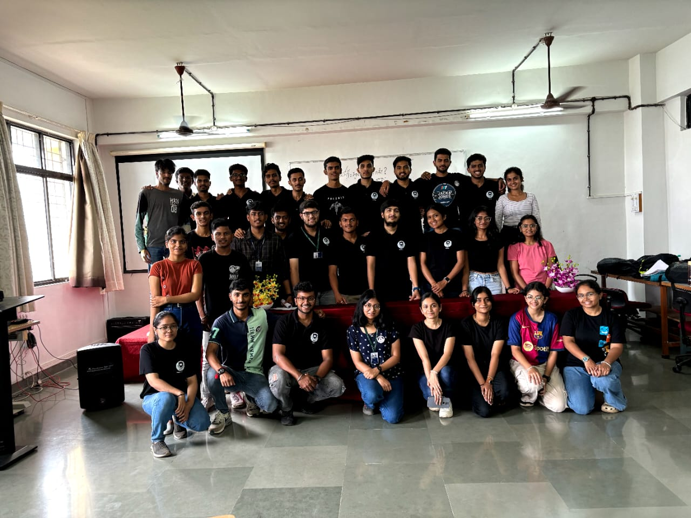
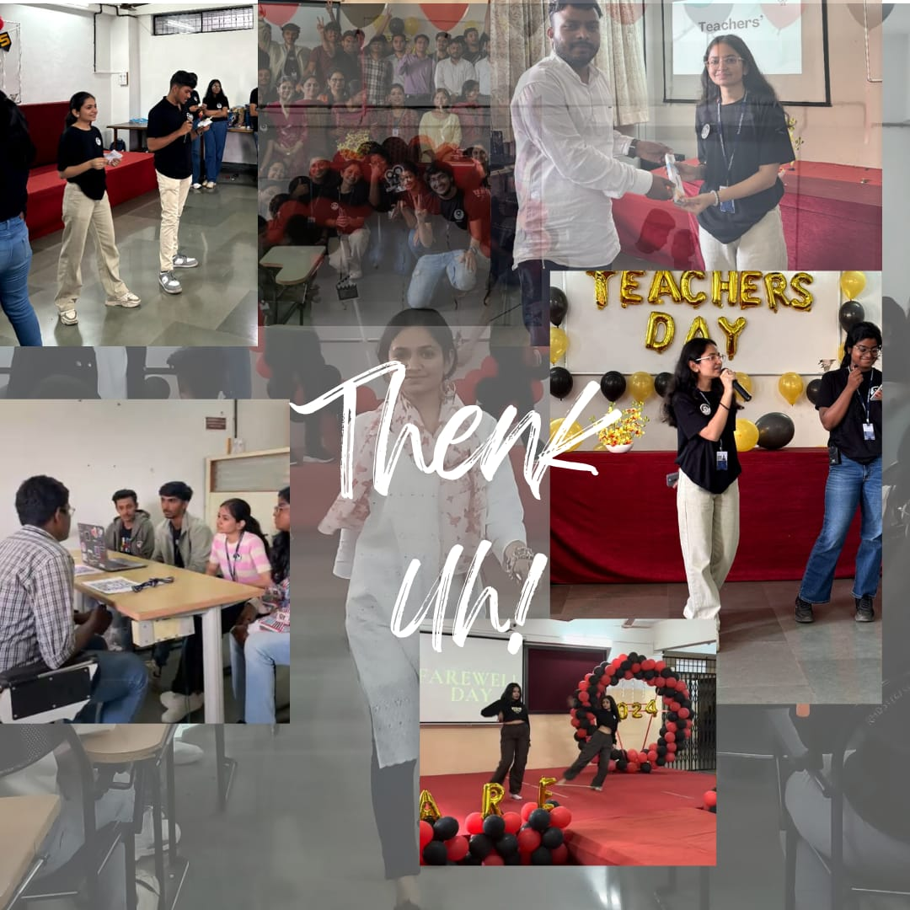

Taddaaa!!!
ACES Appraisals,it is.
ft.Jidnyasa Kale
Learnings from being part of ACES

Overall contribution to aces:-
- Cultural:
Engaging students from our department into cultural, to help the college cultural team to grow,and
to help students from our department to get a space to improve there artistic skills.
Cultural Performance Coordination in events.
Participation in performances.
- Socials:
Video making ideas.
Highlight cover ideas
Capturing some content.
Captions.
Contribution in post/story edits.
- Decoration:-
Decoration ideas,Gift ideas and being a helping hand to the decoration team.

Event wise contribution in aces:-
- BE farewell :- Dance Performance
- Fish-pond game Anchoring in se induction 2023
- Made Sash for Fe induction
- Encouraged students at induction to be the part of event
- Coordination of perrformances in se induction.
- Contributed to the interview panel for aces new recruitment process
- Coorditnated students at ace recruitment process
- Ideas to associate with cultural team of college for students to explore their artistic skills,like announcing the cultural competetions, and workshop news
- Ideas to make aces not just event team but more than that by introducing workshops for students
- Github workshop board decoration.
- IG Story template for engineer's day
- Bought colors for rangoli,Rangoli decoration for fe induction 2024
- Sapling wrapping for fe induction
- Coordinating with students for performing at fe induction
- Caption for fe induction 2024 post
- Engineer's day event board decoration ideas
- Teacher's day decoration idea for ballons
- PPT for teacher's day
- In Reel making and invitation process for teacher's day
- Teacher's Day event anchoring.

Feedback on making aces better
- Make Aces to be heard more than event team by organizing workshops for tech, and cultural workshops like dance etc.
- Make meetings more frequent,not just before events.
- To take opinion of every person in meetings.
- Introduce students to the competition around the world,country,or other colleges.Not just tech but cultural and other too.

Why should we choose you for those positions??
I am capable of this role bcoz i can handle all responsibilities assigned,with dedication,cooprate with other team for there work.
I can manage my team in tight working enviornments like recent teacher's day and engineer's day event of ours.
I am capable for this role because of my cultural skills like painting,dancing etc.Representing cultural team and
being part of our college's cultural team makes it eaiser
to build the bridge for students to connect with aces and cultural team.
I believe that I can provide great value to aces cultural team's growth further.
My abilities to manage the events for cultural and cooradinating performances at events,
also the experience i have gained at aces cultural has made me understand its work environment,culture,and the procedures for the events.
As a result i strongly believed to be choosen as ACES culturalhead.
